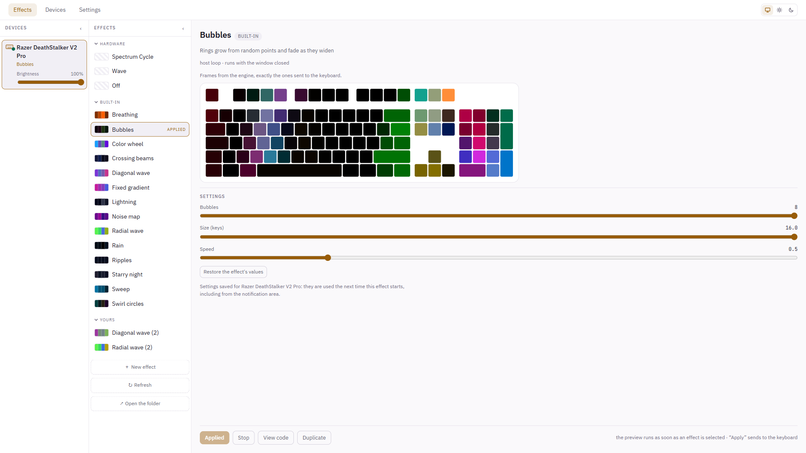

One small app instead of the maker's lighting software. Pick an effect, make the lights follow your music, or let them tell you when something happens. No account, no extra services to install, nothing sent anywhere.
Free and open source. Windows today, Linux on its way.

Up and running in a minute
- Install Candeo from the Microsoft Store.
- Open Devices and click Control next to your keyboard.
- Pick an effect and Apply it. It keeps running when you close the window.
Twenty-four effects, ready to go
Colour and motion
Radial wave, Diagonal wave, Sweep, Color wheel, Swirl circles, Crossing beams, Breathing, Noise map, Fixed gradient
Weather and night
Rain, Starry night, Lightning, Bubbles
Your typing
Ripples: a ring from every key you press
Time and words
Clock, and Scrolling text for any words you like
Your other tools
Status row: a key per thing you watch, green, amber or red
Your music
Equalizer, Waterfall, Beat pulse, Beat ripples, Fireworks, Aurora
Your games
Counter-Strike 2: your health, your ammo, flashes and the bomb
Tune each one while you watch it. Your keyboard's own built-in effects are there too, under their usual names.
Lights that dance to your music
An equalizer, fireworks on the beat, an aurora swaying at the song's tempo — and any effect can follow the sound: faster when it gets loud, redder with the bass. Candeo listens to what your speakers play, never your microphone, and records nothing. How sound works →
Lights that tell you things
Rules
The time on the hour, the keyboard dark at night: a rule takes over for a while, then gives your effect back.
How rules work →Signals
A build that failed, the doorbell, a call starting: a script or Home Assistant tells Candeo, and your keyboard shows it.
How signals work →Games
Your health, your ammo, the bomb: Counter-Strike 2 tells Candeo what happens in your game.
Connect a game →Your devices
Candeo lights the Razer DeathStalker V2 Pro and the Alienware m18 R1 — its keyboard, key by key, and the lights around it — with their brightness and their own built-in effects. See the devices →
More Razer keyboards — BlackWidow, Huntsman, Cynosa and other DeathStalkers — have a definition waiting for someone to try it. Try yours →
Yours is not there yet? A device is a file you can write, and try at once. Describe your device →
Make it yours
An effect is a short file you can read. This one is the keyboard at the top of the page:
import { bounds, center, defineEffect, hsv } from '@candeo/effects-api'
export default defineEffect({
description: 'A rainbow sweeping across the keyboard',
render({ layout, time, frame }) {
const area = bounds(layout)
for (const key of layout.keys) {
const across = (center(key).x - area.x) / area.w
frame.set(key, hsv(across * 360 - time * 60, 1, 1))
}
},
})Write yours in Candeo, next to a preview of your keyboard, and apply it when it looks right. Devices, signals and settings are just as open. Build on Candeo →
What it sends
Nothing. No account, no telemetry, no identifier — read the privacy policy.